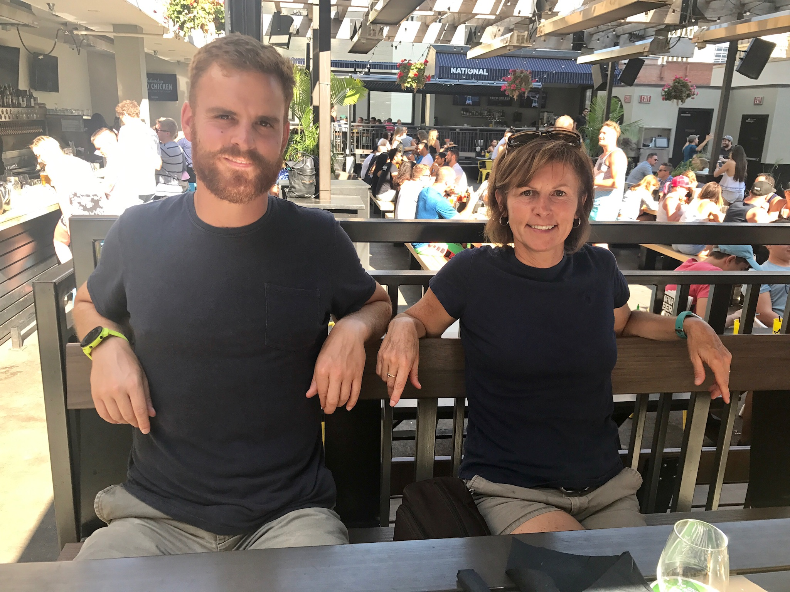
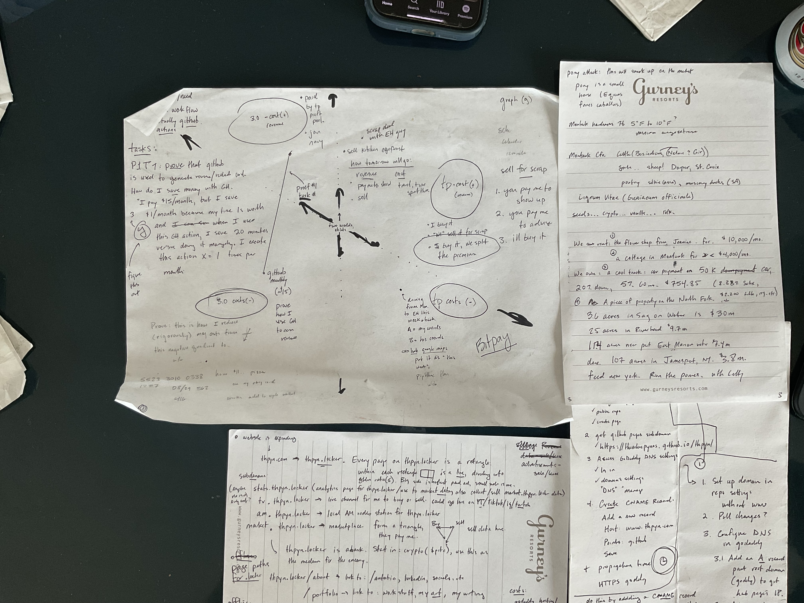

First Written 29 Sept 2024, Last Edited 30 Sept 2024
I did not plan on writing my fucking autobiography today, trust me. I'm an underachieving, self-loathing 35-year-old man lost at sea. WILSON!
"I'm not black, I'm OJ! .... okay?"
I could point out that the inspiration for the title of this document was not inspired by "him," it was inspired by another guy.
I'm not going to point that out to you, though. I don't have to. I don't have to explain anything to you, but some things I will. Things that pertain to my life, my family, my friends, my future and legacy. A legacy is big, I know. I've been working at it my entire life.
My Mom and I during a strategy session on a family vacation in Calgary, AB. Children of many Steelers, Penguins, or Pirates, you're welcome. You can read this because of her and her colleagues over the last three decades while your dads were winning championships in the Burgh. She even let me read to you, too. I was the random giant guy.
From 2015 to 2021, I worked to help ELG Metals support Mario's Foundation in housing families whose children are receiving WORLD-CLASS, long-term, live-saving treatment at Children's in Pittsburgh. Think globally, act locally.
My life until today has been very private, originally from my style, but entering professional life without social media and making it until 35 was a blessing I didn't expect. Between my two Instagram profiles, two Facebook profiles, two LinkedIn profiles, two Snapchat profiles and two TikTok profiles(see the pattern?), I've logged about 28 hours of shit time exploring mostly what looks like an agglomeration of my Pornhub.com taste in women over the last seven days. I quit social media while I was at Slippery Rock in 2010, nearly 15 years ago. I was managing my killer vices responsibly. I dropped social media like a BAD HABIT, but successfully retained alcohol, nicotine, gambling, competitiveness, pornography, weed, music, sex, love and learning. Roughly working out to 2.5 years, I cannot complain about lost time from what was gained avoiding social media. Thanks, college Ted. You burned $100,000 and didn't study a lick but you set yourself up for success by being different from the rest. I've seen a lot in the last fifteen years and those extra 2.5 years are a bonus windfall that I earned and deserved. Lucky me.
Plenty of people know me, but I’m naturally introverted and not an advertiser of my own story. A Heineken and weed pen can get some information out of me, if you need it. I keep extensive notes and diary/notebook a lot, but it’s disorganized today. Recent entries look like this:
I'm a real treat for pillowtalk. "What is the proof for the absolute value of the positive marginal carrying costs on 100 tonnes of copper in Detroit delivered November?
"..I'm going to sleep."[She rolls over]
90% is organized, archived and indexed for when I die they can give it to first year psychiatry students.
I conclude with "lol" a lot in messages because communicating is hard enough; millenial speed-texting on razor-wire personal issues handled from a distance is a networking problem for our generation, or texters as a whole, for that matter. I'm not going to "lol" at all in this document. I guess you have to know me to figure it out.
Writing an autobiography is narcissistic even for Theodore Pynos, you're welcome, but my motivation to do so hit me like a truck today. Maybe it's happenstance, maybe I've been “The Last Lecture” by late Carnegie Mellon University Computer Scientist and pioneer Randy Pausch before heading to bed recently. It’s a Pittsburgh read that packs a heavy punch on life, love, legacy and untimely death. I’m not dying, by the way. I've been using that book as a map since I was a young man. I know parts of it by heart like a Keith Richards song. Dr. Pausch’s legacy has been a gift to me since his death in his 40's from pancreatic cancer in 2008.
I was working in Carnegie Mellon’s finance department erasing dead employee’s paper personnel files the summer after he died. I was lost in enjoying and admiring the endlessly esotertic names of the CMU deceased madmen and madwomen(Kodiak Firestone? Are you kidding me?) when alphabetically, Dr. Pausch’s file was next to be destroyed. I had only skimmed his book at the time, but I’ll never forget that day. I didn’t cry when my grandfather, Theodore Pynos, Sr., died, but after I found his file, I sat on the toilet of the UTDC on North Craig Street in Oakland for 20 minutes and cried for a stranger I’d never known. Maybe that was Pittsburgh in me. Or him.